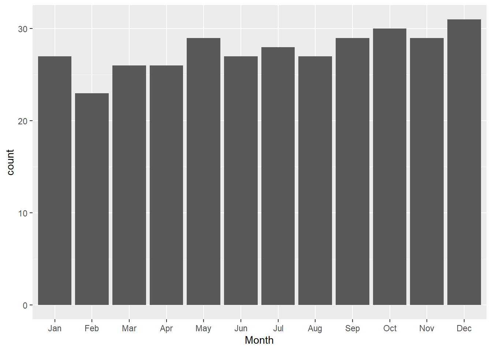
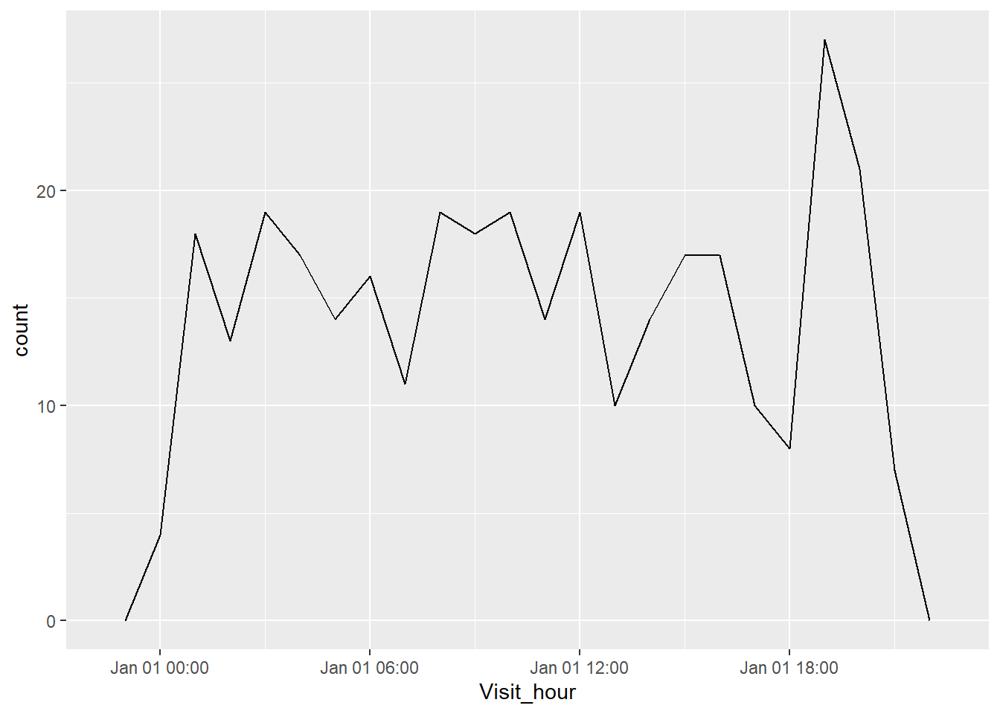
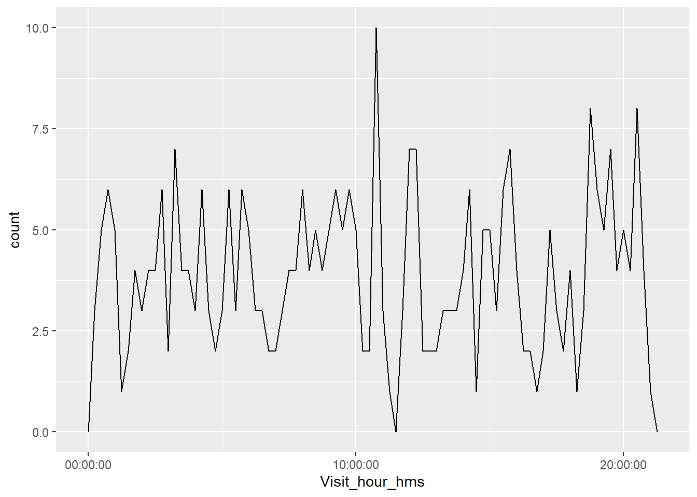

Chapter 7 Date & Time Data with lubridate
7.1 Instructions
In this tutorial, we will be exploring how to deal with date/time data in R using the lubridate package. This incudes creating new, retrieving information from existing, modifying, and conduct different arithmetic calculations on date/time data. We will also be plotting date/time data to visualize our dataset.
Accompanying this tutorial is a short Google quiz for your own self-assessment. The instructions of this tutorial will clearly indicate when you should answer which question.
7.2 Learning Objectives
- Understand the basics of the lubridate package and its simple datetime functions.
- Know how to create date, time, and datetime data on R.
- Know how to retrieve information from date/time data
- Know how to modify date/time data
- Know how to add, subtract, multiply, divide date/time data
- Be familiar with graphs with date/time data.
7.3 Set Up
For this tutorial, we will need the lubridate package with functions that will allow us to deal with date/time data. This package is also part of the tidyverse core that also houses readr, dplyr, and ggplot2.
#install.packages(lubridate)
library(lubridate)We will also be using the Friend visits.csv dataset. This dataset was especially prepared for this tutorial, and it includes specific data that will help us understand lubridate more! In short, this made-up dataset contains information about the times that our host(s) had friends over and the times that they left.
Let’s import this dataset into R now using read_csv() from the package readr.
#install.packages("readr")
library(readr)visits <- read_csv("data/Friends visits.csv")## Rows: 365 Columns: 8## -- Column specification --------------------------------------------------------
## Delimiter: ","
## dbl (8): Friend, Year, Month, Day, Hour, Minute, Second, Left_time##
## i Use `spec()` to retrieve the full column specification for this data.
## i Specify the column types or set `show_col_types = FALSE` to quiet this message.head(visits)## # A tibble: 6 x 8
## Friend Year Month Day Hour Minute Second Left_time
## <dbl> <dbl> <dbl> <dbl> <dbl> <dbl> <dbl> <dbl>
## 1 1 2015 1 1 19 4 22 830
## 2 2 2015 1 2 9 20 19 850
## 3 3 2015 1 3 22 23 9 923
## 4 4 2015 1 4 9 22 51 1004
## 5 5 2015 1 5 18 1 16 812
## 6 6 2015 1 6 5 59 2 740We will also need the dplyr and ggplot2 packages to plot a few graphs.
#install.packages(dplyr)
library(dplyr)
#install.packages(ggplot2)
library(ggplot2)7.4 Exploring Friends Visits Dataset
Before we jump into lubridate and date/time data, let’s first explore the Friends visits dataset that we will be using today.
head(visits, 20)## # A tibble: 20 x 8
## Friend Year Month Day Hour Minute Second Left_time
## <dbl> <dbl> <dbl> <dbl> <dbl> <dbl> <dbl> <dbl>
## 1 1 2015 1 1 19 4 22 830
## 2 2 2015 1 2 9 20 19 850
## 3 3 2015 1 3 22 23 9 923
## 4 4 2015 1 4 9 22 51 1004
## 5 5 2015 1 5 18 1 16 812
## 6 6 2015 1 6 5 59 2 740
## 7 7 2015 1 7 9 45 55 913
## 8 8 2015 1 8 12 3 33 709
## 9 9 2015 1 9 17 9 59 838
## 10 10 2015 1 10 16 44 43 753
## 11 11 2015 1 11 0 31 28 849
## 12 12 2015 1 12 19 40 54 853
## 13 13 2015 1 13 7 55 6 924
## 14 14 2015 1 14 13 23 15 923
## 15 15 2015 1 15 14 51 17 941
## 16 16 2015 1 16 21 11 24 702
## 17 17 2015 1 17 0 32 7 854
## 18 18 2015 1 18 9 31 32 851
## 19 19 2015 1 19 4 56 41 837
## 20 20 2015 1 20 20 24 22 844As we can see, the dataset Friends visits contains information about all of the visits from friends that the host(s) received in the year 2015. The information includes date and time of each friend’s visit as well as the time that they left.
Right now, the none of the columns are recognized as date or time in R because all of the information are scattered across multiple columns. In addition, the column “Left_time” also clumps together the hours and minutes into one incoherent number. For this specific column, we need to clearly identify the hour and minute so that R can recognize it as containing date/time.
But before we jump even further into this tutorial, let’s actually filter out information from this dataset. Let’s say we only want to retain visits that are before 9 PM.
visits <- filter(visits, Hour < 21)Now, let’s check our dataset again.
head(visits)## # A tibble: 6 x 8
## Friend Year Month Day Hour Minute Second Left_time
## <dbl> <dbl> <dbl> <dbl> <dbl> <dbl> <dbl> <dbl>
## 1 1 2015 1 1 19 4 22 830
## 2 2 2015 1 2 9 20 19 850
## 3 4 2015 1 4 9 22 51 1004
## 4 5 2015 1 5 18 1 16 812
## 5 6 2015 1 6 5 59 2 740
## 6 7 2015 1 7 9 45 55 9137.5 Creating Date/Time Data
Date/time data are data tht conveys information about, you guessed it, date and/or time! There are three relevant data types when we talk about date/time data: 1. Date - only has the date (e.g. 2020-05-15) 2. Time - only has the time (e.g. 20:45:00) 3. Datetime - has both the date and time (e.g. 2020-05-15 20:45:00)
Now that we know the different types of date/time data, know that there are also several ways for us to create date/time data: we can create them from raw strings, from an existing date/time data, or from a dataset.
7.5.1 Strings
Firstly, we can use ymd() with a quoted string to create a new date/time data.
ymd("2021-06-20")## [1] "2021-06-20"We can also change the order of the letters in ymd() to match which information came first (year, month, or day). For example, R reads ymd() as “year, month, date” and dmy() as “day, month, year.”
dmy("15 Feb, 2010")## [1] "2010-02-15"Similarly, mdy() is also an option. In the example below, the string is just a series of numbers that R will reads as month, day, year.
mdy("07082016")## [1] "2016-07-08"If we do choose to only write a series of number, then our string can be unquoted as well. R will still be able to identify that this is a string and will read it accordingly!
mdy(07082016)## [1] "2016-07-08"In addition, we can also generate hour, minute, and second information by using ymd_hms(). Different than the functions above, we cannot change the order of “hms.”
ymd_hms("2021-06-20-5-49-34")## [1] "2021-06-20 05:49:34 UTC"In R, the default time zone is Coordinated Universal Time, or UTC for short. But we can also change the time zone of our date/time data by using the tz argument like so:
ymd_hms("2021-06-20-5-49-34", tz = "America/Vancouver")## [1] "2021-06-20 05:49:34 PDT"ymd_hms("2021-06-20-5-49-34", tz = "Etc/GMT+7")## [1] "2021-06-20 05:49:34 -07"To check the full list of time zones that R recognizes, we can use the function OlsonNames().
head(OlsonNames(), 10)## [1] "Africa/Abidjan" "Africa/Accra" "Africa/Addis_Ababa"
## [4] "Africa/Algiers" "Africa/Asmara" "Africa/Asmera"
## [7] "Africa/Bamako" "Africa/Bangui" "Africa/Banjul"
## [10] "Africa/Bissau"We can also use the following code to check what our current time zone is.
Sys.timezone()## [1] "America/Los_Angeles"If after running the code above and R returns NA or UTC for you, it means the software cannot correctly identify where we are. For this, we can tell R directly what our time zone is. For example, if we are in Vancouver, BC, Canada right now, we would write the following code:
Sys.setenv(TZ = "America/Vancouver")To confirm if the correct time zone has been set, we can use the functions today() or now().
today()## [1] "2021-09-05"now()## [1] "2021-09-05 14:17:25 PDT"Try it yourself 7.1
After running the today() and now() codes above, what do you see?
Try to also change the time zone to where you are or to something else. Now what do you see when you run today() and now()?
DO QUESTIONS 1-3 OF THE QUIZ NOW
Which of the following is a date data?
What data type is this: 2017-09-19 19:00:00?
What is different about the outputs’ data types of
today()andnow()? (Select all that apply)
7.5.2 Existing Date/Time Data
You may have recognized that while today() gives us only the current date, now() gives us both the date and time of our current location - in this case, America/Vancouver.
We can actually convert date data to datetime and vice versa using as_datetime() and as_date().
## from date to datetime
as_datetime(today())## [1] "2021-09-05 UTC"## from datetime to date
as_date(now())## [1] "2021-09-05"7.5.3 Dataset
Lastly, we can also create date/time data using a dataset. For this section, we will be using the flights dataset from the nycflights13 package that we have briefly explored previously.
Let’s quickly look at our data again.
head(visits)## # A tibble: 6 x 8
## Friend Year Month Day Hour Minute Second Left_time
## <dbl> <dbl> <dbl> <dbl> <dbl> <dbl> <dbl> <dbl>
## 1 1 2015 1 1 19 4 22 830
## 2 2 2015 1 2 9 20 19 850
## 3 4 2015 1 4 9 22 51 1004
## 4 5 2015 1 5 18 1 16 812
## 5 6 2015 1 6 5 59 2 740
## 6 7 2015 1 7 9 45 55 913As we can see, all of these columns contain data regarding date and time.
Unfortunately, because the information about datetime is divided up into different columns, R does not recognize it as date/time data. What we need to do is combine and convert all of these columns into datetime. To do this, we can use the function make_datetime().
visits_datetime <- visits %>%
mutate(Visit_time = make_datetime(Year, Month, Day, Hour, Minute))head(visits_datetime)## # A tibble: 6 x 9
## Friend Year Month Day Hour Minute Second Left_time Visit_time
## <dbl> <dbl> <dbl> <dbl> <dbl> <dbl> <dbl> <dbl> <dttm>
## 1 1 2015 1 1 19 4 22 830 2015-01-01 19:04:00
## 2 2 2015 1 2 9 20 19 850 2015-01-02 09:20:00
## 3 4 2015 1 4 9 22 51 1004 2015-01-04 09:22:00
## 4 5 2015 1 5 18 1 16 812 2015-01-05 18:01:00
## 5 6 2015 1 6 5 59 2 740 2015-01-06 05:59:00
## 6 7 2015 1 7 9 45 55 913 2015-01-07 09:45:00Now if we look at our new column Visit_time, we should see that all of the information that we have mentioned in our code have been combined into one single value that takes the form of datetime!
So we know how to combine information of different columns to form one cohesive one, what about the Left_time colum? How can we turn values like 1951 into 19:51:00? Once again, make_datetime() is the answer!
But first, we need to quickly create a new function that will help us make this process easier. This new function will retain information about the year, month, and date as well as divide the time into hours and minutes.
make_datetime_new <- function(year, month, day, time) {
make_datetime(year, month, day, time %/% 100, time %% 100)
}DO QUESTION 4 OF THE QUIZ NOW
- REVIEW: What is the difference between %/% and %%?
Here, we are telling R to write a new make_datetime() function named make_datetime_new(). Our new function then has 5 arguments, the year, the month, the day, the time %/% 100, and the time %% 100. The last two arguments will give us the hour and minutes of the day. In other words, 830 %/% 100 = 8 and 830 %% 100 is 30, so combined, 830 becomes 8:30!
Now if we apply this new function to our flights_datetime’s arr_time column, we should see the new “arr_time” column with the arrival time of flights in date/time form.
Friends_visits <- visits_datetime %>%
mutate(Left_time = make_datetime_new(Year, Month, Day, Left_time))head(Friends_visits)## # A tibble: 6 x 9
## Friend Year Month Day Hour Minute Second Left_time
## <dbl> <dbl> <dbl> <dbl> <dbl> <dbl> <dbl> <dttm>
## 1 1 2015 1 1 19 4 22 2015-01-01 08:30:00
## 2 2 2015 1 2 9 20 19 2015-01-02 08:50:00
## 3 4 2015 1 4 9 22 51 2015-01-04 10:04:00
## 4 5 2015 1 5 18 1 16 2015-01-05 08:12:00
## 5 6 2015 1 6 5 59 2 2015-01-06 07:40:00
## 6 7 2015 1 7 9 45 55 2015-01-07 09:13:00
## # ... with 1 more variable: Visit_time <dttm>Another simpler way to use make_datetime() is to insert the numerical values of the year, month, day, and time directly.
make_datetime(2014, 8, 22, 9)## [1] "2014-08-22 09:00:00 UTC"DO QUESTION 5 OF THE QUIZ NOW
- Using the Friends_visits data frame, which of the following code will give us a new column named “Year_Month” that only has information of the year and month of each friend visit?
Functions Debunked
make_datetime() can be used to create new datetime data. The arguments are as follows:
make_datetime(Values of Year, Values of Month, Values of Day, Values of Hour, Values of Minute, Values of Second)
For example:
Combine columns of a dataset:
flights_datetime %>% make_datetime(year, month, day, hour, minute)Insert values directly:
make_datetime(2014, 8, 22, 9)
Try it yourself 7.2
Try creating a new column named “Day_visit” that only contains information of the Year, Month, and Day columns using the Friends_visits dataframe that we just created.
7.6 Retrieving Information from Date/Time Data
We have learned how to create date/time data, but how do we retrieve information from the date/time data that we created? Hopefully, by the end of this section, we would be able to answer this question!
Let’s first create a simple datetime value from a string using ymd_hms(). And let’s also use the column “Visit_time” of our Friends_visits data frame.
DT <- ymd_hms("2020-04-19 09:45:00")head(Friends_visits$Visit_time)## [1] "2015-01-01 19:04:00 UTC" "2015-01-02 09:20:00 UTC"
## [3] "2015-01-04 09:22:00 UTC" "2015-01-05 18:01:00 UTC"
## [5] "2015-01-06 05:59:00 UTC" "2015-01-07 09:45:00 UTC"7.6.1 Year
Now, if we want to know the year of our datetime value, we can use the function year() with the name of our datetime variable between the ().
year(DT)## [1] 2020head(
year(Friends_visits$Visit_time)
)## [1] 2015 2015 2015 2015 2015 2015The reason why the outputs to year(Friends_visits$Visit_time) are all 2015s is because if we look at the first 6 records of the columns “Visit_time,” all year values are 2015!
Similarly, we can also use the function yday() to find out what day of the year our datetime value falls into. For example, April 19 is the 110th day of the year.
yday(DT)## [1] 110Using the same function on our Friends_visits data frame, we can see that the first 6 records of the column “Visit_time” contains the first, second, fourth, fifth, sixth, and seventh day of the year.
head(
yday(Friends_visits$Visit_time)
)## [1] 1 2 4 5 6 77.6.2 Month
mday() is similar to yday() except it gives us what day of the month our datetime value falls into. In this case, “4-19” is the 19th day of April!
mday(DT)## [1] 19What days of the month do the first 6 records of Visit_time contain?
head(
mday(Friends_visits$Visit_time)
)## [1] 1 2 4 5 6 7At this point, we should already have figured out the pattern, so month() will give us the month of our datetime value, normally, with a numerical output. If we want to convert month from a numerical “4” to “Apr,” we would add the label argument like so:
month(DT, label = TRUE)## [1] Apr
## 12 Levels: Jan < Feb < Mar < Apr < May < Jun < Jul < Aug < Sep < ... < Dechead(
month(Friends_visits$Visit_time, label = TRUE)
)## [1] Jan Jan Jan Jan Jan Jan
## 12 Levels: Jan < Feb < Mar < Apr < May < Jun < Jul < Aug < Sep < ... < Dec7.6.3 Week
wday() will give us what day of the week our datetime value falls into. Similarly, we can use label to change numerical values to “Mon,” “Tues,” “Wed,” etc. If we want the full “Monday” instead of just “Mon,” we would add the abbr argument like so:
wday(DT, label = TRUE, abbr = FALSE)## [1] Sunday
## 7 Levels: Sunday < Monday < Tuesday < Wednesday < Thursday < ... < Saturdayhead(
wday(Friends_visits$Visit_time, label = TRUE, abbr = FALSE)
)## [1] Thursday Friday Sunday Monday Tuesday Wednesday
## 7 Levels: Sunday < Monday < Tuesday < Wednesday < Thursday < ... < SaturdayTry it yourself 7.3
Using the functions introduced above, solve the following questions: 1. What day of the week is April 2, 2014? 2. What day of the year is 2017-09-15? 3. What day of the month is 20190830? 4. Find the months of the last 11 records of the column Visit_hour.
7.6.4 Plotting Retrieved Information
Let’s try to aply the functions that we just learned above by retrieving information from the Friends_visits dataset that we previously created.
Here is the dataset again:
head(Friends_visits)## # A tibble: 6 x 9
## Friend Year Month Day Hour Minute Second Left_time
## <dbl> <dbl> <dbl> <dbl> <dbl> <dbl> <dbl> <dttm>
## 1 1 2015 1 1 19 4 22 2015-01-01 08:30:00
## 2 2 2015 1 2 9 20 19 2015-01-02 08:50:00
## 3 4 2015 1 4 9 22 51 2015-01-04 10:04:00
## 4 5 2015 1 5 18 1 16 2015-01-05 08:12:00
## 5 6 2015 1 6 5 59 2 2015-01-06 07:40:00
## 6 7 2015 1 7 9 45 55 2015-01-07 09:13:00
## # ... with 1 more variable: Visit_time <dttm>Let’s say we want to plot a bar graph to show how many visits each month in 2015 the hosts have using the Visit_time column. First we want to extract the months from the Visit_time values. After that, we want to place the extracted months in the “month” column.
To complete our goals, we need to use both mutate() and month() like so:
head(
Friends_visits %>%
mutate(Month = month(Visit_time, label = TRUE))
)## # A tibble: 6 x 9
## Friend Year Month Day Hour Minute Second Left_time
## <dbl> <dbl> <ord> <dbl> <dbl> <dbl> <dbl> <dttm>
## 1 1 2015 Jan 1 19 4 22 2015-01-01 08:30:00
## 2 2 2015 Jan 2 9 20 19 2015-01-02 08:50:00
## 3 4 2015 Jan 4 9 22 51 2015-01-04 10:04:00
## 4 5 2015 Jan 5 18 1 16 2015-01-05 08:12:00
## 5 6 2015 Jan 6 5 59 2 2015-01-06 07:40:00
## 6 7 2015 Jan 7 9 45 55 2015-01-07 09:13:00
## # ... with 1 more variable: Visit_time <dttm>We should be able to see that all of the “1”s under the month (second) column, have successfully turned into “Jan.”
Finally, all we need is a ggplot() canvas and a geom_bar() function! (Notice the transition from pipe %>% to +).
Friends_visits %>%
mutate(Month = month(Visit_time, label = TRUE)) %>%
ggplot(aes(Month)) +
geom_bar()
DO QUESTION 6 OF THE QUIZ NOW
- What is the difference between
%>%and+? (Select all that apply)
Try it yourself 7.4
Using the same Friends_visit dataset, create a similar graph as above but the x-axis is days of the week. In other words, create a bar graph that shows how many visits there are in each day of the week.
7.7 Updating & Plotting Date/Time Data
7.7.1 Update
To modify or update a piece of date/time data, we would use update(). Updating a date/time data can mean changing it completely:
(DT <- ymd_hms("2020-04-19 09:45:00"))## [1] "2020-04-19 09:45:00 UTC"update(DT, year = 2021, month = 6, day = 21, hour = 9, minute = 13)## [1] "2021-06-21 09:13:00 UTC"The cool thing about the update() function is that it will automatically adjust the date and time if the value that we want to change our current date/time to is too large. For example, April only has 30 days. Now look what happens when we try to update our date to 2020-04-31.
DT %>%
update(day = 31)## [1] "2020-05-01 09:45:00 UTC"update() automatically adjusts it to May 1st instead because April 31st does not exist!
Try it yourself 7.5
Try to update our month to 13. What happened to our date/time? What is the output?
update() can be used to update existing datetime data. The arguments are as follows:
update(
year = VALUES OF YEAR,
month = VALUES OF MONTH,
day OR mday OR yday = VALUES OF DAY,
hour = VALUES OF HOUR,
minute = VALUES OF MINUTE,
second = VALUES OF SECOND
)
For example:
* update(DT, year = 2021, month = 6, day = 21, hour = 9, minute = 13)
* update(ymd_hms("2020-04-19 09:45:00"), year = 2021, month = 6, day = 21, hour = 9, minute = 13)
7.7.2 Plotting Date/Time
So far, we have learned how to plot graphs with date data type, such as month and weekday, in the x-axis. But what if we want to plot our time data in the x-axis instead? Although it sounds simple, plotting time data may be a bit harder than it seems because there is no function in the lubridate package that allows us to only retain time data. In other words, there is no hms() function… in lubridate.
To loophole around this issue, we can use update()! Basically, we want to update all dates in our data to the same date, let’s say January 1 2015, so that when we plot the graph, the graph will be representative of friends visits in each hour. It will make more sense when we start plotting the graph.
Let’s check the dataset again before we start plotting.
head(Friends_visits)## # A tibble: 6 x 9
## Friend Year Month Day Hour Minute Second Left_time
## <dbl> <dbl> <dbl> <dbl> <dbl> <dbl> <dbl> <dttm>
## 1 1 2015 1 1 19 4 22 2015-01-01 08:30:00
## 2 2 2015 1 2 9 20 19 2015-01-02 08:50:00
## 3 4 2015 1 4 9 22 51 2015-01-04 10:04:00
## 4 5 2015 1 5 18 1 16 2015-01-05 08:12:00
## 5 6 2015 1 6 5 59 2 2015-01-06 07:40:00
## 6 7 2015 1 7 9 45 55 2015-01-07 09:13:00
## # ... with 1 more variable: Visit_time <dttm>Recall that in this dataset, we have already converted the Visit_time column to contain data in the date/time form. However, right now, R recognizes this column using date AND time, but we only want R to distinguish the different times for our graph. So, as we have discussed before, we want to trick R into thinking that all 365 records are of the same date, just different times. To do this, we use update().
head(
Friends_visits %>%
mutate(Visit_hour = update(Visit_time, yday = 1))
)## # A tibble: 6 x 10
## Friend Year Month Day Hour Minute Second Left_time
## <dbl> <dbl> <dbl> <dbl> <dbl> <dbl> <dbl> <dttm>
## 1 1 2015 1 1 19 4 22 2015-01-01 08:30:00
## 2 2 2015 1 2 9 20 19 2015-01-02 08:50:00
## 3 4 2015 1 4 9 22 51 2015-01-04 10:04:00
## 4 5 2015 1 5 18 1 16 2015-01-05 08:12:00
## 5 6 2015 1 6 5 59 2 2015-01-06 07:40:00
## 6 7 2015 1 7 9 45 55 2015-01-07 09:13:00
## # ... with 2 more variables: Visit_time <dttm>, Visit_hour <dttm>Now if we look at the new “Visit_hour” column, all records should have the same date: 2015-01-01. Perfect!
The next step is to actually plot this on a frequency polygon like so:
Friends_visits %>%
mutate(Visit_hour = update(Visit_time, yday = 1)) %>%
ggplot(aes(Visit_hour)) +
geom_freqpoly(binwidth = 3600)
This graph is a bit tricky to read because even though the x-axis says that all data points are within Jan 01, we know this is not true - the data displayed are from Jan 01 to Dec 31! Again, the reason why our x-axis is labelled as Jan 01 is because we have tricked R into thinking that all data points are of the same date so that our graph can plot the number of friend visits depending on times.
What information can you conclude from the graph above? Around what timeframe do our host(s) receive the most friends visits?
Note that each binwidth (i.e. binwidth = 1) is equal to one second. So binwidth = 3600 means we are clumping all flights within each 60 minutes (1 hour) together into one single data point in our frequency polygon.
Try it yourself 7.6
Recreate the frequency polygon above but change the binwidth so that all flights within each 30 minutes are clumped into one single data point. How do the graphs differ? Can you think of a few scenarios where one would be preferred?
DO QUESTION 7 OF THE QUIZ NOW
- What should the binwidth be if we want to have each data point to represent a separate 2 hour interval?
7.7.2.1 hms package
There is actually another package in R (and also part of the tidyverse core) that deals with time data specifically: hms. This function provides an alternative to the ggplot code we just wrote above.
We will not go over this package or function in detail in this tutorial. You can explore hms more via this link.
#install.packages("hms")
library(hms)head(
Friends_visits %>%
mutate(Visit_hour_hms = hms(Second, Minute, Hour))
)## # A tibble: 6 x 10
## Friend Year Month Day Hour Minute Second Left_time
## <dbl> <dbl> <dbl> <dbl> <dbl> <dbl> <dbl> <dttm>
## 1 1 2015 1 1 19 4 22 2015-01-01 08:30:00
## 2 2 2015 1 2 9 20 19 2015-01-02 08:50:00
## 3 4 2015 1 4 9 22 51 2015-01-04 10:04:00
## 4 5 2015 1 5 18 1 16 2015-01-05 08:12:00
## 5 6 2015 1 6 5 59 2 2015-01-06 07:40:00
## 6 7 2015 1 7 9 45 55 2015-01-07 09:13:00
## # ... with 2 more variables: Visit_time <dttm>, Visit_hour_hms <time>We can see that our “Visit_hour_hms” column actually only retain time (hour, minute, second) data directly. Using this column, we can plot our frequency polygon like so:
Friends_visits %>%
mutate(Visit_hour_hms = hms(Second, Minute, Hour)) %>%
ggplot(aes(Visit_hour_hms)) +
geom_freqpoly(binwidth = 900)
If we compare this graph with the one above, we should see that they are identical! Except the x-axis in this graph is much clearer and accurate because it only contains the time of day.
7.8 Arithmetic Operators with Date/Time
7.8.1 Basic Arithmetic
Just like any other types of data on R, we can conduct basic arithmetic operations using date/time data.
5 * (years(2) + months(11))## [1] "10y 55m 0d 0H 0M 0S"days(50) + hours(25) + minutes(2)## [1] "50d 25H 2M 0S"ymd_hms("2020-04-19 09:45:00") +
days(50) + hours(25) + minutes(2)## [1] "2020-06-09 10:47:00 UTC"We can also combine arithmetic operators with today() or now() like the code below to find out someone’s age!
(age <- today() - ymd("2000-02-15"))## Time difference of 7873 daysAs you may have seen, telling someone you are 7,797 days old is quite a mouthful, and also pretty impractical. A way for us to make this number more comprehensible is by converting it to years using the function as.duration().
as.duration(age)## [1] "680227200s (~21.56 years)"DO QUESTION 8 OF THE QUIZ NOW
- We can use
now()to calculate our age as well. (True or False)
7.8.2 Account for Leap Years and Daylight Savings
A potential problem with the functions that you are introduced to in the pr is that they do not account for time changes within the year. For example, a leap year can add an extra day to the year and daylight savings may add or subtract an hour from a day.
To solve this problem, we can use dyears() and ddays() instead of the normal years() and days().
7.8.2.1 Leap Year
We know that 2020 was a leap year. Let is check the difference between adding one year to 2020-01-01 using years() and dyears().
## Normal
ymd("2020-01-01") + years(1)## [1] "2021-01-01"## Considers Leap Year
ymd("2020-01-01") + dyears(1)## [1] "2020-12-31 06:00:00 UTC"As we can see, dyears() accounts for an extra day in February, so it recognizes that 365 days (1 year) after 2020-01-01 is only 2020-12-31, not 2021-01-01.
7.8.2.2 Daylight Savings
Similarly, ddays() recognizes that daylight savings in Vancouver started in early morning 2021-03-14, and correctly calculates that 1 day (24 hours) after 2021-03-14 1AM is actually 2021-03-15 2AM!
## Normal
ymd_hms("2021-03-14 1:00:00",
tz = "America/Vancouver") +
days(1)## [1] "2021-03-15 01:00:00 PDT"## Considers Daylight Savings
ymd_hms("2021-03-14 1:00:00",
tz = "America/Vancouver") +
ddays(1)## [1] "2021-03-15 02:00:00 PDT"DO QUESTIONS 9 & 10 OF THE QUIZ NOW
Which of these functions account for date and time changes throughout the years?
What happens when we use
ddays()ordyears()in days or years that do not experience any special time/date changes?
7.9 Summary and Takeaways
After completing this tutorial, you should be more familiar the lubridate package and know the basic ways to deal with date/time data in R. This tutorial covered how to create new date/time data, retrieve information from existing date/time data, modify and plot date/time data, as well as conduct simple arithmetic operators using date/time data.
Date/time is quite interesting once you get the hang of it. This data type can give us very valuable information about the dataset that we are working with. Again, it is okay to make mistakes and be confused when we first got started, but know that fluency also comes from practice!